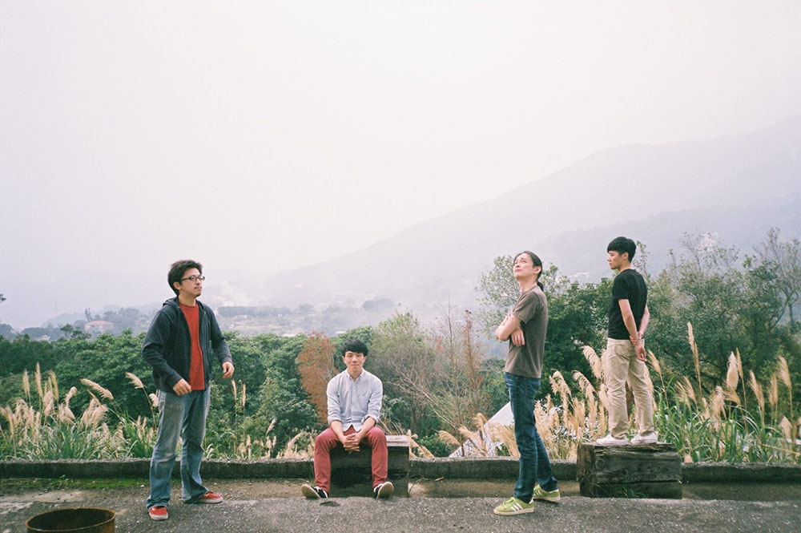
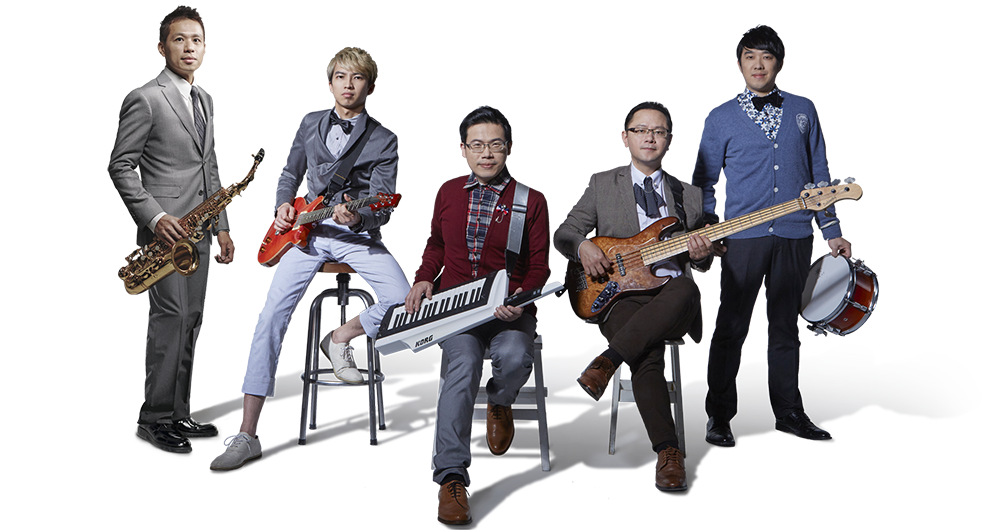
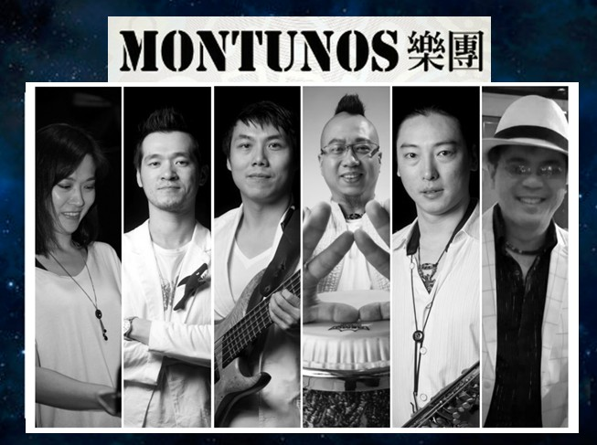
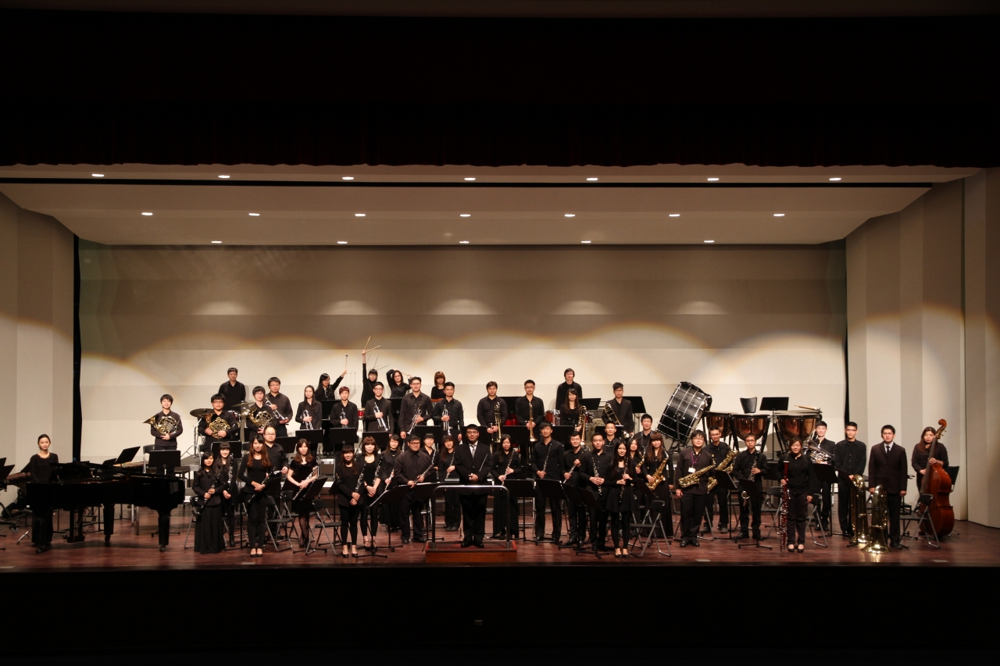

桃園發聲音樂會
日期：04月28日（六）
地點：平鎮山仔頂公園
卡到音即興樂團
卡到音即興樂團 Ka Dao Yin 團員由李世揚 (鋼琴)、劉俊德 (古箏)、李俐錦 (笙)、Klaus Bru (薩克斯風)組成。該團呈現前衛的聲響實驗、民族樂風的自然純樸、古典的嚴謹思考、爵士搖滾的律動，企圖發展出一種難以定義，具多重性且融合的新式音樂風格。2012年專輯《四字成語》獲第三屆金音創作獎「最佳爵士專輯」，並以〈神采飛揚〉榮獲最佳爵士單曲。 2014年專輯《慢》獲第25屆傳藝金曲獎「最佳跨界音樂專輯」。

桃園發聲音樂會
日期：05月05日（六）
地點：龜山第一河濱公園
陳穎達爵士樂團
2012年成軍，由四位爵士音樂家組成，演奏富想像力與浪漫情懷的原創音樂；2015年出版了首張專輯 “R.E.M MOODS”，榮獲同年金音創作獎最佳爵士單曲，並入圍最佳爵士專輯。2017年秋天出版第二張專輯“動物感傷“，是帶有室內樂與劇場氛圍的新音樂。 樂團除了終年不斷發表新作品，在各展演空間演出外，也受邀至大小音樂節演出，包括2015-17台中國際爵士音樂節、2015澳門爵士週、2016台北爵士音樂節、2016雷克雅維克音樂節、2017兩廳院夏日爵士派對爵士小酒館等等。

桃園發聲音樂會
日期：05月06日（日）
地點：龍潭運動公園
Skyline融合爵士樂團
Skyline 天際線融合爵士樂團成軍於 2003年，是台灣少數始終秉持融合爵士風格的創作樂團。成立十四年來歷經許多大型爵士音樂節演出與 live house的淬鍊，音樂觸角也持續從爵士、流行、放客、拉丁到節奏藍調、靈魂樂等類型深度延伸，同時融合台灣本地文化，創作出獨樹一格的融合爵士曲風。 「Skyline」是天際線的意思，指城市建築在天空中勾勒出的線條，而爵士樂正是屬於城市與都會的音樂。長期浸淫於各種類型的爵士音樂，大量接觸國外現代爵士大師的作品，從他們身上汲取精髓，詮釋經典之作，一方面匯聚團員們的靈感，內化吸收再結合團員們的生活經驗，創造出屬於台灣的融合爵士樂。

桃園發聲音樂會
日期：05月12日（六）
地點：桃園青溪公園
Montunos拉丁爵士樂團
湯宇歆多年遊走在中南美洲的華僑客家人，深受當地西洋文化的薰陶，在濃濃的拉丁旋律中，用客家話輕柔的唱出自創客家歌曲，漸漸地成為國內樂壇的話題。 1996成立並已立案演藝團體的MONTUNOS，專長表演拉丁爵士及客家音樂，歷年來活耀於台北與全省各地表演，是目前華人樂壇裡少見專門表演道地拉丁流行與道地騷莎音樂的樂團。20多年來湯宇歆帶領MONTUNOS樂團致力於表演與眾不同的拉丁音樂，把純粹傳統的拉丁音樂Live Show帶入台灣，在國內掀起的拉丁騷莎舞更是熱度不減。

桃園發聲音樂會
日期：06月03日（日）
地點：蘆竹光明河濱公園
狂美交響管樂團
狂美交響管樂團為桃園市傑出演藝團隊，全員皆由音樂系所專業學歷之青年音樂家所組成，團員中更不乏海外學成歸國音樂演奏博士，除經常性舉辦大型公演外，更不定期深入地方舉辦戶外展演活動，成立迄今已演出逾百場，入場欣賞觀眾達4萬人次。 本團合作對象與國際接軌、領域跨足古典及流行、戲劇，演奏技術及合奏默契精湛。我們秉持「對美的極致追求」信念，「精緻」的音樂呈現、「創新」的展演型態、「傳承」的教育內涵、「和眾」的節目導向，持續推出兼容經典與創新之創作，期盼將優質的音樂藝術推廣於社會大眾呈現給市民大眾，為台灣音樂的扎根與推廣貢獻心力。

桃園發聲音樂會
日期：06月19日（二）
地點：大溪區中正公園
金喇叭銅管5重奏《2018萬花銅音樂世界》
金喇叭銅管5重奏成立於於2012年6月，至今5週年，演出破百場音樂會，以推廣銅管5重奏音樂為宗旨，金喇叭不單只是融合國、台、客、英語流行音樂及電影配樂、爵士音樂與各地方文化背景等音樂，並加入了趣味遊戲、有獎徵答等互動模式，除了讓觀眾喜歡上銅管音樂外，也讓每位參與者都能有意想不到的收穫。 本次2018桃園管樂嘉年華演出，金喇叭以萬花銅音樂世界為主題，邀請多元銅管樂在此相聚，邀請桃園在地的曼斯特低音銅管四重奏、滑聲長號四重奏與金喇叭一同演出，讓銅管樂迷們一探銅管音樂的神奇魔力，就讓大夥們感受一下銅管家族音樂宴會囉！

桃園發聲音樂會
日期：06月23日（六）
地點：中壢藝術館音樂廳
入場方式：索票入場
星空交響管樂團《真星相遇》
「星空交響管樂團」創立於2013年8月，成立之初以玩「樂（音樂）」為宗旨，聚集各界管樂好手，一同享受音樂之喜樂。成立之初，樂團以「吃喝玩樂團」之名在2013年桃園國際管樂節音樂比賽中，榮獲社專組冠軍，為延續樂團理念，樂團於2017年改名為「星空交響管樂團」，給予年輕音樂家一個完善的舞台，曾於2017辦理動漫草地音樂會、【桃子大冒險】原創親子音樂劇、【單簧管與浪漫之夜】室內樂系列音樂會，曾獲中壢SOGO日本美食展、溫馨音樂饗宴邀演。 星空交響管樂團曾於2016、2017年由管樂知名大師──指揮許雙亮教授帶領樂團演出多首經典管樂曲，廣獲觀眾好評；2018年再次邀請許雙亮教授擔任客席指揮，許雙亮教授是臺灣知名的指揮、作曲、編曲家及管樂文字作家，曾任臺北市立交響樂團首席長號、演奏組主任、台北銅管五重奏團員，2002年起更擔任台北市立交響樂團附設管樂團指揮，本場演出將以管樂詮釋多首經典電影樂曲，讓觀眾在優美樂聲中重溫電影美好。
